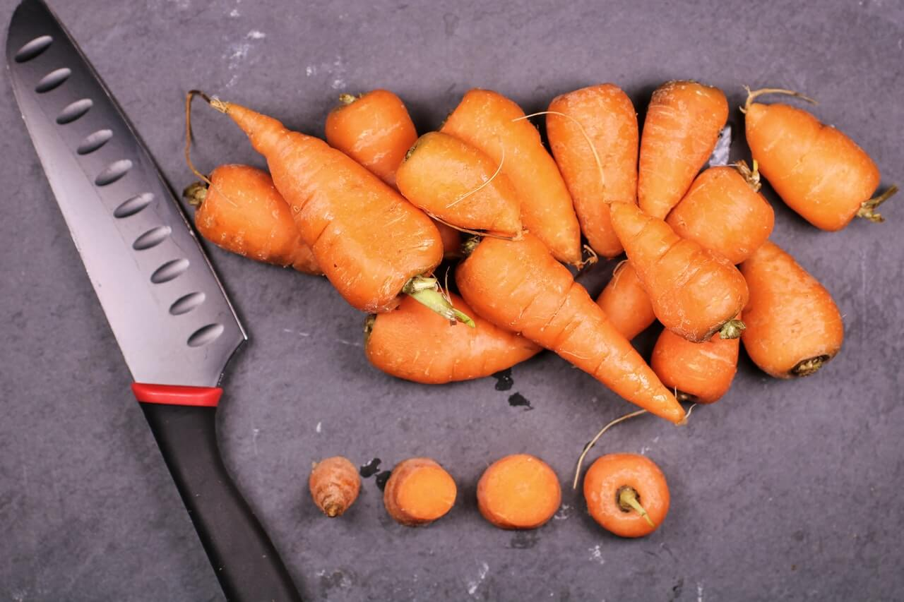
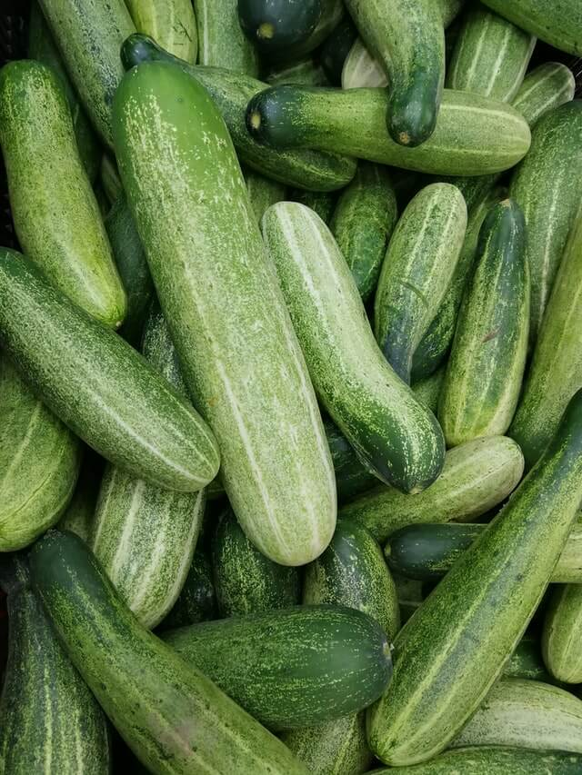
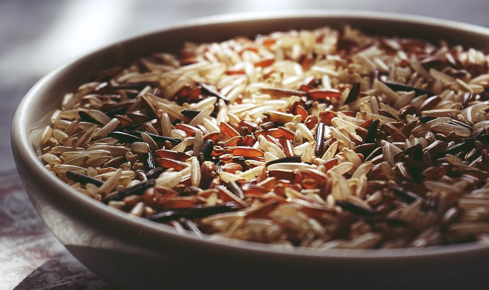

Ingredietes Para Hacer Sushi
Carne
Pollo
Res
Pezcado
Salmón
Frutas
Zanahoria
Pepino
Aguacate
Arroz
Arroz Para Sushi

Es la foto de una zanahoria

Es la foto de un Pepino

Es la foto de granos de Arroz